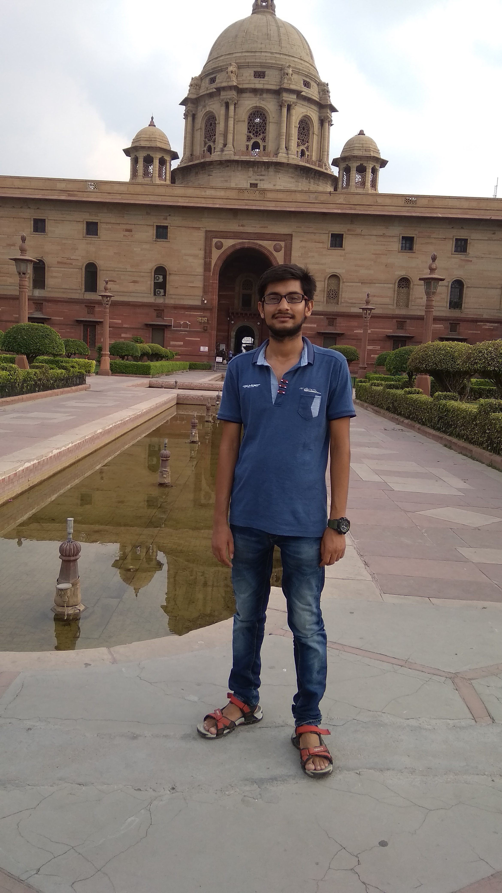

Piyush Shukla
B.Tech,CSE,2nd yr
19 yrs
piyushshukla2100@gmail.com
9918431420
Sitapur,U.P.
 I father's name is Mr. Kamlesh Chandra Shukla and mother is Mrs. Indu Lata Shukla.I passed out my highschool and intermediate from Sacred Heart Inter Collge, Sitapur.After that I went to Kota for JEE preparation but could not clear JEE.Currently I am pursuing B.Tech form Ajay Kumar Garg Engineering College,Ghaziabad.My branch is CSE.I am also an intern at Devslane and I am working on flutter.
I father's name is Mr. Kamlesh Chandra Shukla and mother is Mrs. Indu Lata Shukla.I passed out my highschool and intermediate from Sacred Heart Inter Collge, Sitapur.After that I went to Kota for JEE preparation but could not clear JEE.Currently I am pursuing B.Tech form Ajay Kumar Garg Engineering College,Ghaziabad.My branch is CSE.I am also an intern at Devslane and I am working on flutter.
| Subject |
Aggregate |
| Physics |
87 |
| Chemistry |
94 |
| Maths |
85 |
| Overall |
85 |
- I was the office bearer twice(prefect and house captain).
- I took part in sports like football and cricket.
- I took part in speech and other such competitions.
In 2018, I started B.Tech in Ajay Kumar Garg Engineering College,Ghaziabad.I am from CSE branch.In 2nd semester,I joined Devslane as an intern and currently I am working as a Flutter Developer.
Since I joined interns in feb 2019 so I could not participate in much college events as I work 5:00 to 8:00 after the college.But still I took parts in some workshops and events of societies of the college.
As a flutter developer,I have been working for 6 months now.Till now, I have worked as a frontend developer.I have worked on many widgets like slivers,lists,preferred size,animations and all other basic widgets.
For state management, I have used two methods:-Redux and Mobx State Management.
Till now I have been a part of 3 projects:-
1.Project Osler Health App.(It is a app for facilitating medical patients.)
2.Kinzy: Stranger Connect Chat App.(It is a basic chat app for personal and group chats.)
3.Devslane ERP App.(It just holds some records of interns and employee of Devslane.I am currently active on this Project.)
Other than flutter,I have worked on programming languages like C and C++.I have learnt web development in HTML.For flutter,I studied Dart language.For competitive prgramming,I will learn python language.
On flutter I have only worked as a frontend developer so I want to learn backend development also.So that I can handle oother projects on myself.